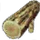
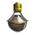
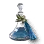

+
Monk's Branch
🔗
+
How to Get
+
Gathering
🔗
Acacia Trees
Ash Trees
Birch Trees
Cactus Trees
Cedar Trees
Date Palm Trees
Elder Trees
Fir Trees
Loopy Trees
Maple Trees
Moss Trees
Palm Trees
 Pine Trees
White Cedar Trees
+
Nodes
🔗
Forest of Seclusion - Lumbering
Cheapest Route To: Velia (7CP)
(2CP) Bartali Farm
(2CP) Toscani Farm
(2CP) Forest of Seclusion
(1CP) Forest of Seclusion - Lumbering
Oze Pass - Lumbering
Cheapest Route To: Heidel (5CP)
(1CP) Lynch Farm Ruins
(2CP) Nothern Plain of Serendia
(1CP) Bradie Fortress
(1CP) Oze Pass
(1CP) Oze Pass - Lumbering
Cheapest Route To: Keplan (5CP)
(1CP) Keplan Vicinity
(2CP) Quarry Byway
(1CP) Oze Pass
(1CP) Oze Pass - Lumbering
Serendia Shrine - Lumbering
Cheapest Route To: Glish (6CP)
(1CP) Southern Cienaga
(3CP) Southern Guard Camp
(1CP) Serendia Shrine
(1CP) Serendia Shrine - Lumbering
+
Used In Recipe
+
Alchemy
🔗
 Grim Reaper's Elixir
2
 Helix Elixir
3
Oil of Fortitude
1
Perfume of Insight
3
Tyrant's Blood
1
Weenie Elixir
5
Wise Man's Blood
1
+
Processing
🔗
+
Guild
🔗
[Guild] Wind-laden Flax Cloth
1
+
Workshop
🔗
+
Carpentry
🔗
Crio's Fishing Chair
20
+
Tool-Workshop
🔗
Balenos Fishing Rod
9
Calpheon Fishing Rod
9
Epheria Fishing Rod
9
Mediah Fishing Rod
9
And More...
+
notes
-notes
 Forest of Seclusion - Lumbering
Oze Pass - Lumbering
Serendia Shrine - Lumbering
Forest of Seclusion - Lumbering
Oze Pass - Lumbering
Serendia Shrine - Lumbering